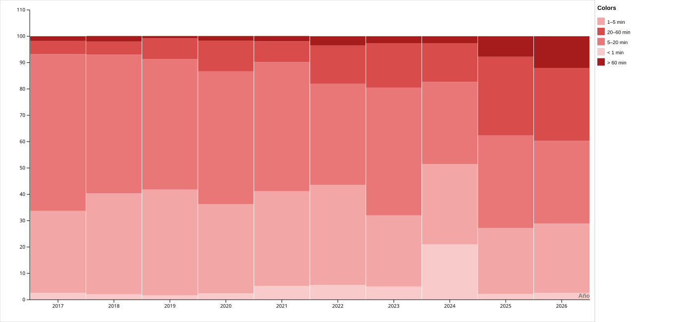

de las reproducciones de 2024 duraban menos de 5 minutos.
Publicidad
¿Cuántos eventos publicitarios registra YouTube por cada 100 reproducciones?
No solo cambió cuánto contenido consumía. También cambió lo que ocurría alrededor de cada reproducción.

Pero consumir más no significa necesariamente volver siempre a los mismos lugares.
Suscripciones
¿Qué tan alineado estuvo mi consumo con los canales que sigo hoy?
El mapa muestra qué porcentaje de las reproducciones con canal identificable pertenece a canales incluidos en mi lista actual de suscripciones.
Una cosa es seguir un canal. Otra es cuánto espacio termina ocupando dentro del consumo.
Concentración
¿Mi consumo de YouTube se volvió más concentrado en pocos canales?
Cada mes se reparte entre el canal más visto, los puestos 2–5, los puestos 6–10 y el resto de los canales identificados.
La transformación no ocurrió solo en qué canales veía, sino en el tipo de atención que pedían los videos.
Duración
¿Los videos que consumo se hicieron cada vez más cortos?
Cada barra anual suma el 100% de las reproducciones cuya duración pudo recuperarse mediante YouTube Data API v3.

de las reproducciones de 2026 correspondían a videos de más de 20 minutos.
Metodología
Cómo se construyeron los datos
Una síntesis del recorrido desde el archivo personal hasta las visualizaciones. Los datos crudos y cualquier credencial permanecen fuera de este sitio.
01 Fuente y limpieza
La fuente principal es el historial de reproducciones de YouTube exportado con Google Takeout, desde enero de 2017 hasta agosto de 2026. El primer y el último período son parciales.
Se identificaron reproducciones mediante registros cuyo título comenzaba con “Has visto” y se excluyeron los registros de publicidad. El resultado reúne 30.715 reproducciones limpias.
02 Canales y suscripciones
Aproximadamente 27.010 reproducciones tenían un canal identificable. La lista de suscripciones corresponde a la exportación de 2026: no reconstruye la fecha histórica de cada suscripción.
También se exportaron búsquedas y otros datos de Takeout para análisis exploratorios, pero no se publican los archivos personales originales.
03 Duración mediante API
Se extrajeron aproximadamente 25.702 IDs únicos. YouTube Data API v3 permitió recuperar la duración para cerca de 27.007 reproducciones del historial.
Algunos videos no pudieron enriquecerse porque fueron eliminados, pasaron a ser privados o dejaron de estar disponibles. En streams, la duración de la API no es tiempo efectivamente visto.
04 Límites y privacidad
- Los eventos publicitarios no equivalen necesariamente a cortes completos.
- Las relaciones visuales no prueban causalidad.
- 2026 representa un período parcial.
- Los JSON crudos de Takeout y las credenciales de API no se publican.
Transparencia
Datos y reproducibilidad
El repositorio publica únicamente archivos procesados o agregados. El conjunto disponible documenta las reproducciones mensuales; los datos personales originales no forman parte del sitio.